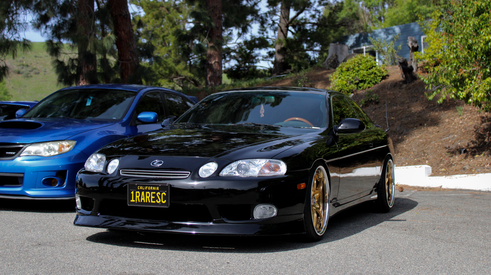
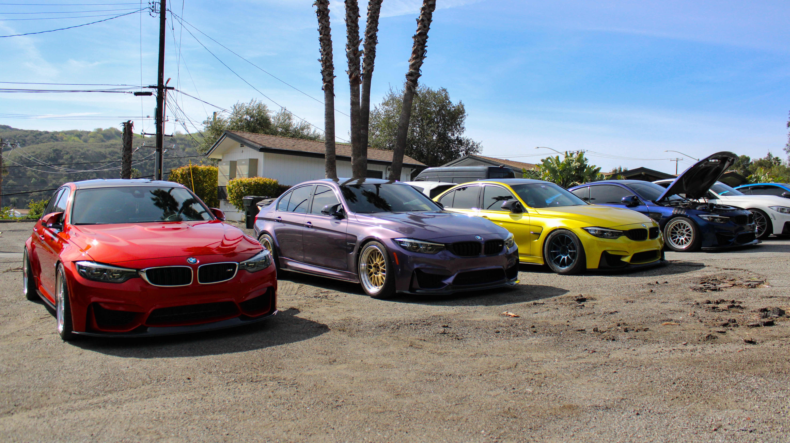
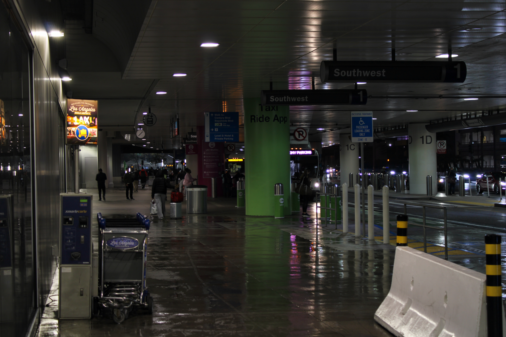
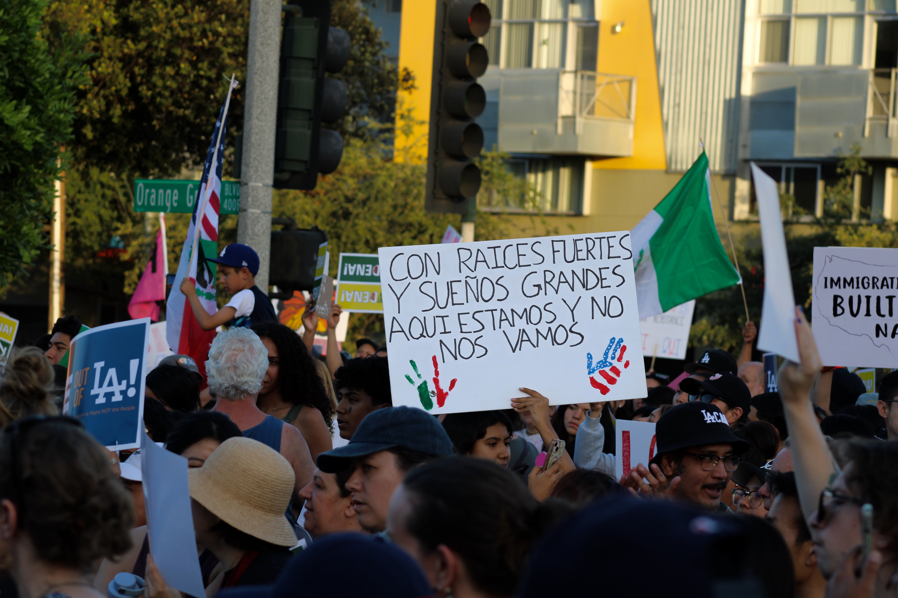
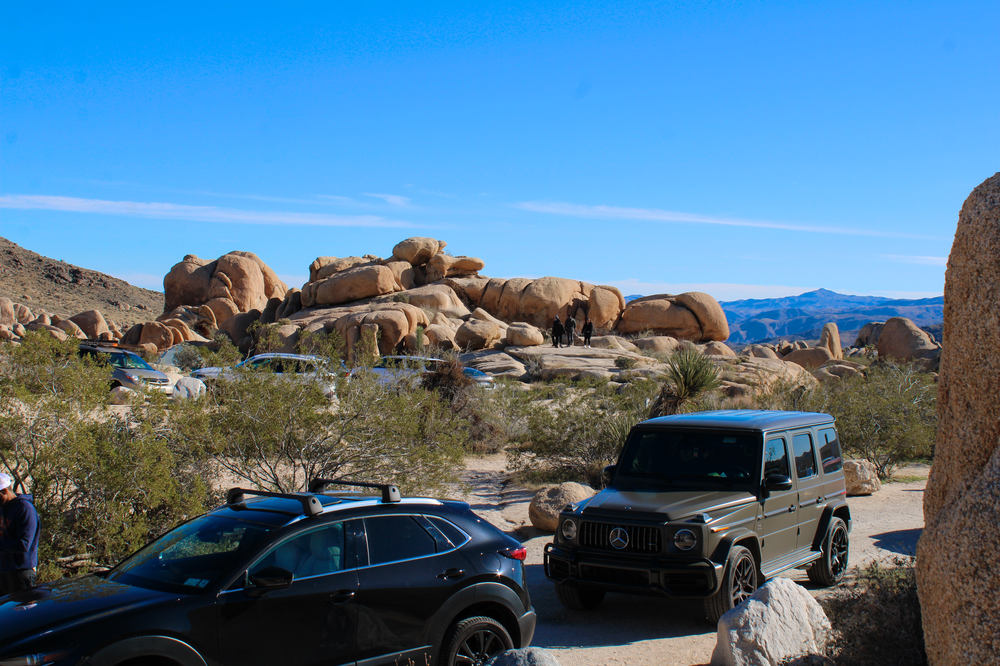
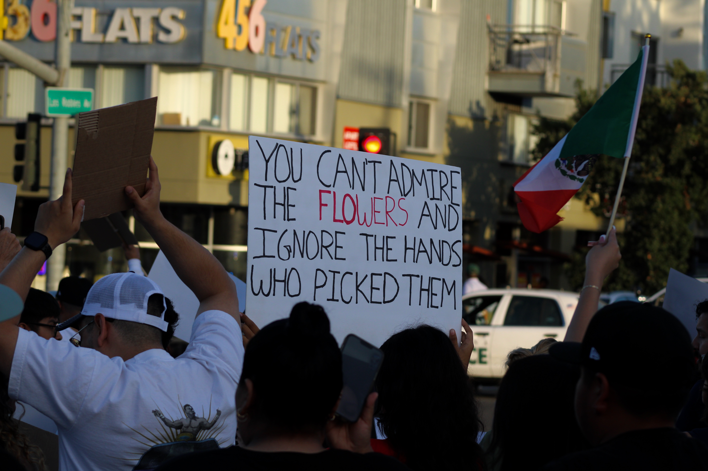
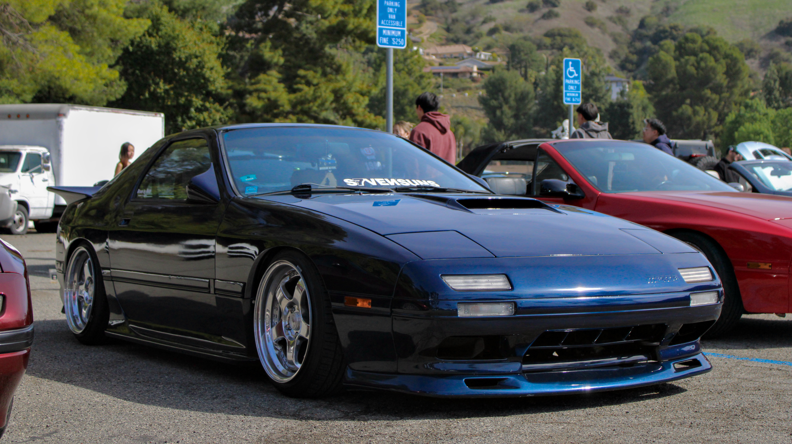

// My passion for photography began in high school when I started carrying my family's old digital camera everywhere, capturing memories of friends, family and scenery. Eventually, I saved enough to buy my own DSLR, and my passion has continued to grow ever since.






